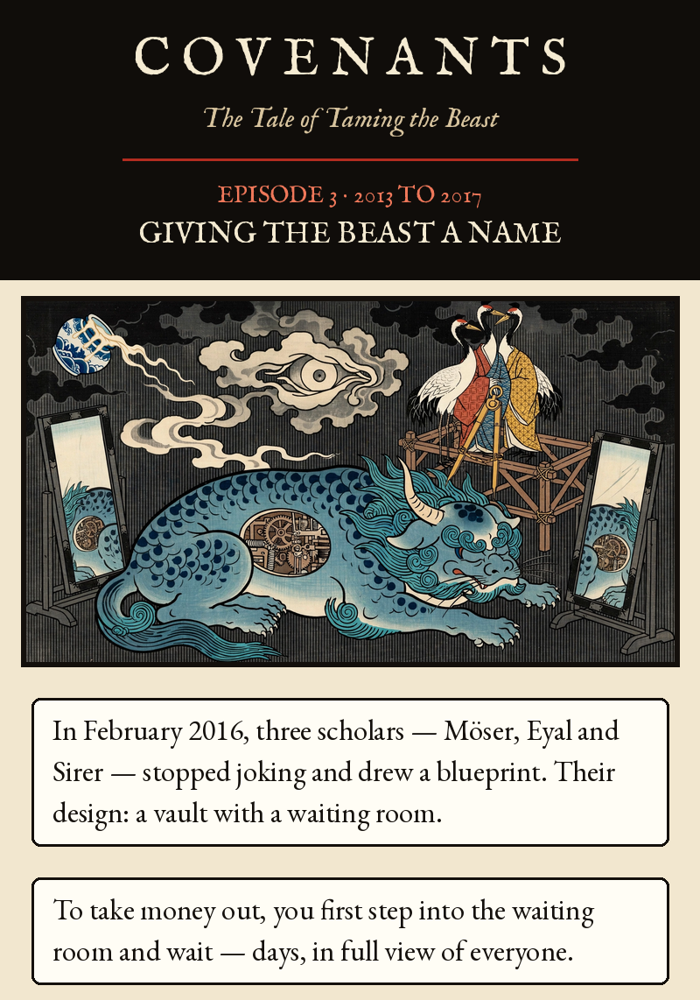
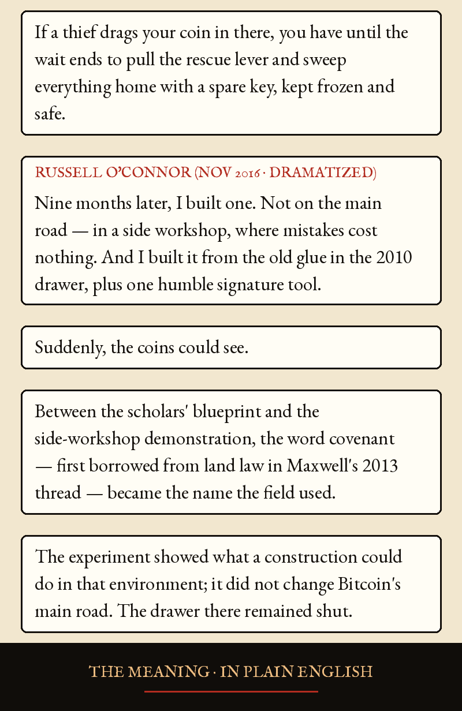
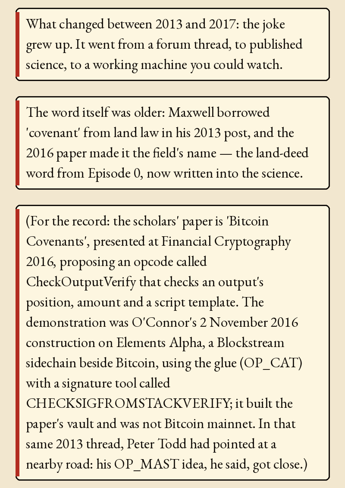
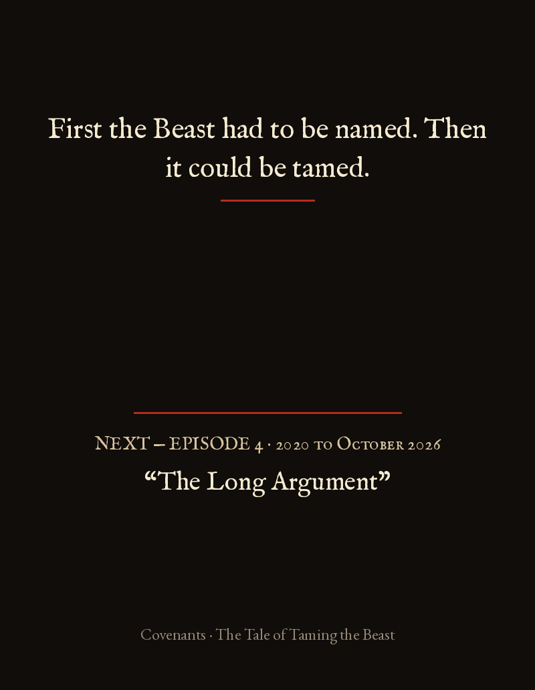

Episode 3 · Giving the Beast a Name




Episode 3 · Giving the Beast a Name — 2013 to 2017
In February 2016, three scholars — Möser, Eyal and Sirer — stopped joking and drew a blueprint. Their design: a vault with a waiting room. To take money out, you first step into the waiting room and wait — days, in full view of everyone. If a thief drags your coin in there, you have until the wait ends to pull the rescue lever and sweep everything home with a spare key, kept frozen and safe.
RUSSELL O'CONNOR (NOV 2016 · DRAMATIZED): Nine months later, I built one. Not on the main road — in a side workshop, where mistakes cost nothing. And I built it from the old glue in the 2010 drawer, plus one humble signature tool. Suddenly, the coins could see.
Between the scholars' blueprint and the side-workshop demonstration, the word covenant — first borrowed from land law in Maxwell's 2013 thread — became the name the field used. The experiment showed what a construction could do in that environment; it did not change Bitcoin's main road. The drawer there remained shut.
THE MEANING · IN PLAIN ENGLISH
What changed between 2013 and 2017: the joke grew up. It went from a forum thread, to published science, to a working machine you could watch.
The word itself was older: Maxwell borrowed 'covenant' from land law in his 2013 post, and the 2016 paper made it the field's name — the land-deed word from Episode 0, now written into the science.
(For the record: the scholars' paper is 'Bitcoin Covenants', presented at Financial Cryptography 2016, proposing an opcode called CheckOutputVerify that checks an output's position, amount and a script template. The demonstration was O'Connor's 2 November 2016 construction on Elements Alpha, a Blockstream sidechain beside Bitcoin, using the glue (OP_CAT) with a signature tool called CHECKSIGFROMSTACKVERIFY; it built the paper's vault and was not Bitcoin mainnet. In that same 2013 thread, Peter Todd had pointed at a nearby road: his OP_MAST idea, he said, got close.)
First the Beast had to be named. Then it could be tamed.
Möser, Eyal & Sirer, 'Bitcoin Covenants' (2016): https://www.wi.uni-muenster.de/research/publications/111559 and paper https://eprint.iacr.org/2016/408.pdf; its prototype modified a Bitcoin client and CheckOutputVerify was never a Bitcoin opcode. Russell O'Connor, 'Covenants in Elements Alpha' (2 Nov 2016): https://blockstream.com/2016/11/02/covenants-in-elements-alpha.html, built with OP_CAT and OP_CHECKSIGFROMSTACKVERIFY, both already in the Elements Alpha sidechain; later written up as O'Connor & Piekarska, FC 2017. Neither was Bitcoin mainnet deployment. The O'Connor speech in the episode is dramatized.